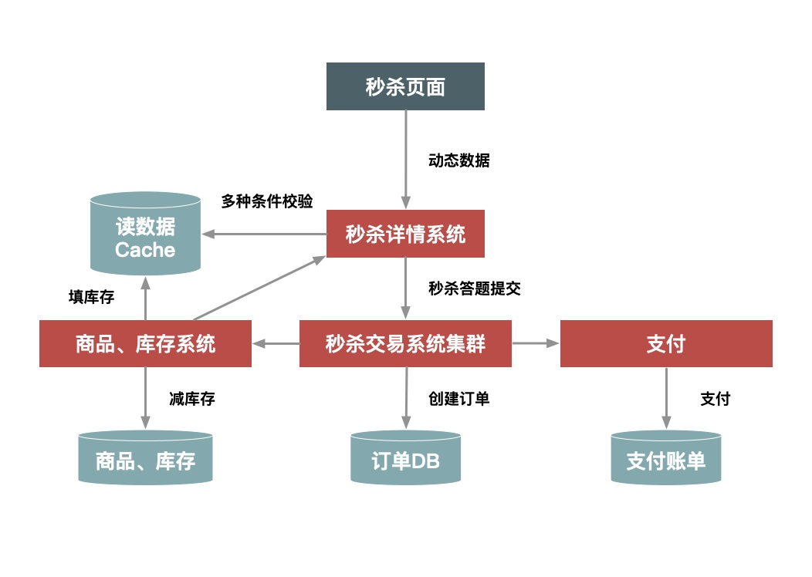
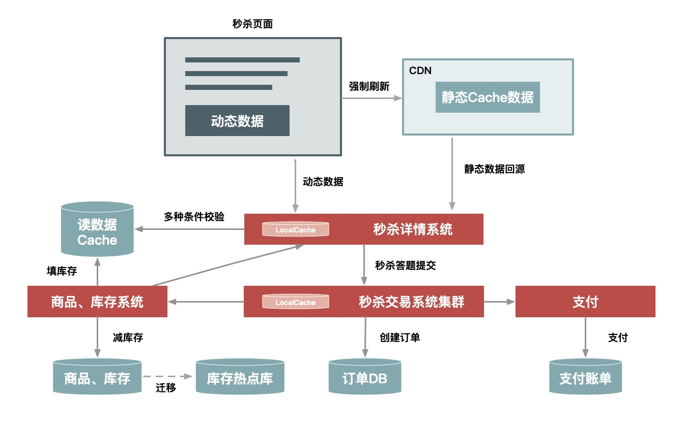

秒杀本质是一个满足大并发、高性能、高可用的分布式系统
架构原则：4 要 1 不要
数据量尽量少
- 用户请求的数据能少就少：包括用户上传的数据以及请求返回的数据
- 系统依赖的数据能少就少：包括系统完成业务逻辑需要读取和保存的数据
请求数量少
减少页面返回后，浏览器渲染的页面包含的额外请求，包括CSS、JS、Ajax请求等
路径要尽量短
用户从发出请求到返回响应，中间经过的节点数，缩短请求路径，不仅可以增加可用性，同时提高性能，并减少延时
其中一个途径就是多个相互强依赖的应用合并部署在一起，把远程过程调用（RPC）变成 JVM 内部之间的方法调用
依赖尽量少
所谓依赖，指的是要完成一次用户请求必须依赖的系统或者服务，这里的依赖指的是强依赖
可以对服务分级，必要的情况下对次要服务进行降级
消除单点
单点意味着没有备份，风险不可控，解决的关键点是避免将服务的状态和机器绑定，即把服务无状态化，这样服务就可以在机器中随意移动；如把和机器相关的配置动态化，这些参数可以通过配置中心来动态推送；冗余多个备份的方式。
架构案例
初始版本
- 把秒杀系统独立出来单独的一个系统，
- 系统部署独立做一个集群
- 将热点数据单独放在一个缓存中，增加读效率
- 增加秒杀答题，防止秒杀器抢单

改进版本
- 对页面进行动静分离，用户秒杀不需要刷新整个页面，只需要点击抢的按钮
- 服务端对秒杀的产品进行本地缓存，不需要再调用依赖系统的后台服务获取数据，甚至不需要去公共的缓存集群中查询数据
- 增加系统限流保护，防止最坏情况发生
